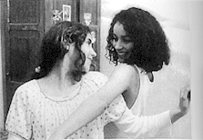
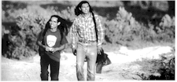

Contents | Features | Reviews | News | Archives | Store

Contents | Features | Reviews | News | Archives | Store
 |
24th Seattle
International by Lyall Bush |
William Carlos Williams, poet of the loaded everyday, once wrote that the art of moviemaking was never better expressed than in the coming attractions reels. He wrote in film’s classical age, during the 1940s, but even then a discerning doctor-poet could see a large portion of movies turning, before his eyes, into lipstick and powder. (Stay with me, I’m paraphrasing here.) But the trailers were different: Williams saw that they roamed backwards and forwards over the otherwise average middle-class emotions. The trailers stripped off the narrative Jabberwock and sent it flying on their lean, mean emotion machines. A boy mows lawns; a man bursts into tears riding an elevator; a girl puffy from crying jams a revolver in her purse; a couple toil under blankets. Trailers fulfilled the promise of Eisenstein’s cinema of flickering juxtapositions, of the Surrealist’s undersea dream fragments gliding and jibing into place. They pushed at us radical encounters, under sunny conditions, music zipping up the montage, and at the speed of trains heading west.
The Seattle International Film Festival, which moves into its 24th version this Thursday with the North American premiere of William Nicholson’s operatically plotted Firelight, is bound to harbor a fair number of those radical accidental Williams epiphanies. For those of us covering the festival images start to roll a couple weeks out. Darryl MacDonald, the festival director, tips us off to the festival’s special events then signals for the 20 minutes of attractions reels to commence – a blur of pictures denting fenders together that takes, magpie style, heightened matter from the coming roster of movies. You reel, afterwards, in the bathroom. The effect of watching them is a little like observing the Rorshach earth from an Apollo capsule, the stilled marble gone Clockwork Orange on our asses. Trailers are, as Frank Sinatra once sang, in a wholly different context, conversations with flying plates.
But how else to suggest the foaming tonnage of films (170 features) at the festival, with all its extras: starlets at mikes in miniskirts, the deep bench of the sidesbar panels harboring grey-cheeked young filmmakers blinking out of their basement editing rooms, the stray glamour pusses. And its bigness demands that we get booted into our blue heavens awhile before the raucous, swinging party of opening night takes it away for the rest of you.
So much depends upon the mix of movies you put together. Last year, my festival was in the range of okay until I took my seat in the Egyptian Theater for Ulysses’ Gaze, whose toweringly pretentious story about the origin of film in Yugoslavia had me clutching my insides and heading for the street halfway through. I feared I might suffer permanent damage. A film like that can put you off movies for awhile; you head for the steady drip, drip, drip of Court TV, for COPS and a beer at twilight. But a day later I was back at it. Which is the addict’s habit, no?
Addiction, in fact, was a centerpiece last year. Griffin Dunne’s Addicted to Love signaled it on opening night – a movie whose average story belied its big visual idea that movie-like images stand in for the opiated fantasy of falling in love. From what I’ve seen so far this year the love habit doesn’t look like it’s going anywhere. Case in point: the deliciously witty The Opposite of Sex, written and directed by Don Roos (who also wrote Boys on the Side) and starring Christina Ricci as a foul-mouthed homophobic pregnant high-school girl, Deedee. Deedee’s up from Louisiana to visit her half- brother, a supremely well-adjusted gay high-school teacher played by Martin Donovan with a reflective love of fate that is pure joy to watch: he noblesse obliges alongside Ricci’s nail-spitter one-liners. Lisa Kudrow is another teacher, alive with her own bitterness: she can’t get over people, or that she’s inadvertently set Donovan up with his latest lover, a ditzy hunk taken to the wall by Ivan Sergei. Together the four make jazz of some of their exchanges over bi-sexuality, family, blackmail, murder and drinking liquor through a pregnancy. Sample line, a voiceover Ricci delivers at a good wiseacre clip: "They all started out like a typical American family. And you know how that turned out – everything went to sh*t pretty quickly." Something like that comes along every few minutes, too. I can’t imagine seeing a fresher movie at the festival this year. (May 23 9:15 Egyptian; May 24 3:30 Egyptian)
Maybe it’s just me, but the love-sex stuff this year seems pretty compulsive. In The Opposite of Sex it’s half funny, but for sheer obsessive-compulsive sex there’s the French entry, Post Coitum, whose French title, Animal Triste, might have been better left untranslated. Zeroing in hard on the flesh fantasy an older French book editor and a young Third World Italian plumber with a six-pack stomach enter into, the film had some regulars grumbling in a "yeah, right" way after the screening I attended. But those are the folks, I’m thinking, for whom the mainline anagnorisis that sex can jig into your system, the animal sadness of lust, is a mystery too. The story follows the editor, who is coaxing a young writer to shake off the sophomore jinx and write his book when she meets his tall, succulent roommate, and over the course of a few weeks shucks her marriage and children and job. She succumb to him, and to a kind of self-destructive streak in herself. The lovers do it everywhere, first in private then in public, falling into a tranced state that at one point finds them dancing in a park gazebo, grinding into each other, nice wrought iron Atget chairs around them and a man drawing music with his forefingers from the rims of a couple dozen verres d’eau. The title begins to make sense only when, out of the blue, the plumber ends it and the editor can’t wring the animal grieving out of herself. (May 24 6:30 Harvard Exit; May 25 3:30 Harvard Exit)
But amour fou may not find a weirder shape this year than in the historical time-travel literary love obsession story in Conceiving Ada. (I mean this in a good way.) Ada is Lord Byron’s daughter, played by Tilda Swinton as an eerie, prescient woman who becomes absorbed by math in the shadow of the Romantic period when her calculations half-conceptualize, half-predict our computers. And it’s Ada who a young computer programmer (Francesca Faridany) in present-day America is frantically typing code to get back to, too. Yes, back. To do that she’s created e-mail software that can, somehow come unstuck in time, capture the "information in the air all around us" as her cryptic guru, Timothy Leary, instructs her to do. The program then transports not our heroine back in time, but Ada forward, to her computer. Conceiving Ada is an unabashed feminist movie, with a lot of those old-time search for the mother themes filtering through it. But there’s an intent and a smartness about this film by Lynn Hershman Leeson that’s hard not to fall for, or to admire. (May 25 6:30 Harvard Exit; May 26 5:00 Egyptian)
In the feminist vein there’s also the Tunisian/French film, Honey & Ashes, a grouping of three overlapping stories about Tunisian woman who pay for defying Muslim rule via sex, or love, or both. In the first, a young girl condemned for her loose behavior around boys flees her family for the city. An older woman tells the younger one how she had to abandon her lover for an arranged marriage. A third is surviving a violent marriage. The feminism of Honey & Ashes is a whole lot more programmatic and flat-footed than in Conceiving Ada, but several well-staged moments and some inter-family conflicts are managed with care – care and a barely concealed anger. The figurative prisonhouse the film portrays women in Muslim countries inhabiting amazes me (I wondered how the film got made at all), but in the end this movie is strictly for the curious, and the "stories about women" crowd. (May 25 6:30 Broadway Performance Hall; May 27 5:00 Guild 45th)
Men Who Like Too Much
Like isn’t love, not quite. But I can’t discuss the
first week’s roster of films without mentioning the appallingly effective Austrian
horror film, Funny Games, about a pin-neat
pair of Leopold and Loeb-esque psychos who tease and torture a family on vacation as a
prelude to a general reign of terror over them. You may guess where the film is headed in
the opening moments, watching a happy family in a station wagon headed for vacation via an
overhead shot out of the Kubrick catalogue of doomed, ‘copter-high camera glances.
The family gets about two minutes of happiness in their summer place.  We watch
them grope through a stuffed larder, feed the dog, wrestle with sailboat gear, wonder
aloud where their daughter is and why uncle Fred was acting so funny. Mom in a swing-y
dress cuts healthy steaks from a long red flank that she pulls out of its wax paper
wrapper in the fridge. She’s talking on the phone to a friend about coming up when a
knock at the door brings a polite young man in white shorts into the house to borrow eggs.
Before very long he and his friend (they are named Peter and Paul) have reduced the whole
family to tears, hysteria and whimpering, all the while neither enjoying nor not enjoying
their work. Instead, both seem, well, theoretical. They quote from college reading: Peter
says of Paul that he’s "tormented by ennui and world weariness, weighed down by
the void of existence." He says the words like a young broker talking up this
week’s hot stock – words he’s learned but that aren’t attached to his
experience in any way. Later he’ll say "Together we rob rich families in smart
houses" as the looks crossing and re-crossing Dad’s face resemble the tenth
draft of a Beethovan composition. For their part the family are frozen by the initial
politeness of the boys; they have no frame of reference for young thugs with pressed
clothes and smooth skin. They fall into a paralyzed silence that you suspect an American
filmmaker wouldn’t, or couldn’t, stomach. But whatever this film is or
isn’t it’s bone-scraping horror. (May 28 9:30 Broadway Performance Hall)
We watch
them grope through a stuffed larder, feed the dog, wrestle with sailboat gear, wonder
aloud where their daughter is and why uncle Fred was acting so funny. Mom in a swing-y
dress cuts healthy steaks from a long red flank that she pulls out of its wax paper
wrapper in the fridge. She’s talking on the phone to a friend about coming up when a
knock at the door brings a polite young man in white shorts into the house to borrow eggs.
Before very long he and his friend (they are named Peter and Paul) have reduced the whole
family to tears, hysteria and whimpering, all the while neither enjoying nor not enjoying
their work. Instead, both seem, well, theoretical. They quote from college reading: Peter
says of Paul that he’s "tormented by ennui and world weariness, weighed down by
the void of existence." He says the words like a young broker talking up this
week’s hot stock – words he’s learned but that aren’t attached to his
experience in any way. Later he’ll say "Together we rob rich families in smart
houses" as the looks crossing and re-crossing Dad’s face resemble the tenth
draft of a Beethovan composition. For their part the family are frozen by the initial
politeness of the boys; they have no frame of reference for young thugs with pressed
clothes and smooth skin. They fall into a paralyzed silence that you suspect an American
filmmaker wouldn’t, or couldn’t, stomach. But whatever this film is or
isn’t it’s bone-scraping horror. (May 28 9:30 Broadway Performance Hall)
The much-anticipated Smoke Signals deals with its own horror, in the form of a mysterious fire. The film begins with a chanting voiceover about a blaze on a reservation near Spokane, Washington back in the 1960's that orphaned one boy and left him with a permanent case of the Mystery of his Origin. It’s not a bad start, but in truth the movie is an orchestrated mess. And the central trauma, the fire, feels awfully early on like a tired trope about the destructiveness of not knowing the truth about the past. It’s The Joy Luck Club stuck on a Greyhound bus, and for sensitive guys. And wouldn’t you know it, the film is based on the Indian writer Sherman Alexie’s collection of short stories, "The Lone Ranger and Tonto Fistfight in Heaven," which means it has its job cut out for it trying to shoehorn all those narrative lines into a single story about the orphaned boy, who grows up into a card-carrying goober named Thomas. Thomas was saved from the fire all those years ago by his friend Victor’s father. So when the two young men learn that dad’s dead they naturally head off to Arizona to retrieve his ashes. For some reason this makes the filmmakers feel the need to hand cool-seeming but pretty non-hilarious one-ines to each of them, usually revolving around some "Indian" cliché or other. But you wish there was a little flicker of wit to the wit. Here’s Victor asking Thomas to stop telling "stories" every time the two stop for a minute: "You always sound like some damn medicine man or something." Which only italicizes Alexie’s point that Thomas is some kind of damn medicine man. Or something. Well the whole thing made me weak. (May 30 6:30 Egyptian; May 31 3:30 Egyptian)
Special Events
And then there are the special events. You’d be a
fool to miss The Kingdom II, the second tier of Lars Von Trier’s Moby Dick
magnum opus about a hospital in Copenhagen built over a swamp. The first four and a half
hour film, from 1995, gets a reprise showing (June 6 12:30 Egyptian) as part of an all-day
marathon.  Like part II, it was recorded on dingy, swimmy greens and transferred, so I
hear, to video, then transferred back to film. It’s a color that exactly expresses
queasiness. It was a funny-shocking-gripping soap opera, a hydra head of stories a-bloom
that puts Alexie’s PC journey to shame. In that first part an old woman conducts
seances in the neurasthenia wing. A Swedish neurosurgeon, furious with the benighted life
of the Danes, inadvertently damages a young Danish girl’s brain, making her a
vegetable. Meanwhile, two retarded dishwashers discuss the meaning of the ghost of another
little girl that wanders the hospital. There’s a sleep disorder clinic that figures
somewhere at the metaphorical center of this Rabelasian scheme, too, and when the first
part ended a woman only 2 months pregnant had just give birth to what appeared to be a
full-grown man. The Kingdom II, we are told, brings back the whole cast of
characters for a 5 hour haul. Ghita Norby, the great Danish actress who plays the
neurosurgeon’s love interest in the film, told me a month ago that Von Trier is hard
at it as we speak making Part III. For now, let’s savor number 2, which I predict
will be, sans doute, and carrying the full Menippean satire tradition on its
shoulders, the best thing at the festival. Better than Nosferatu accompanied by the Alloy
Orchestra, better than the results of the fly filmmaking competition, better than the
North American premiere of Fellini’s Nights of Cabiria (June 13 3:30
Egyptian). Get your tickets now.
Like part II, it was recorded on dingy, swimmy greens and transferred, so I
hear, to video, then transferred back to film. It’s a color that exactly expresses
queasiness. It was a funny-shocking-gripping soap opera, a hydra head of stories a-bloom
that puts Alexie’s PC journey to shame. In that first part an old woman conducts
seances in the neurasthenia wing. A Swedish neurosurgeon, furious with the benighted life
of the Danes, inadvertently damages a young Danish girl’s brain, making her a
vegetable. Meanwhile, two retarded dishwashers discuss the meaning of the ghost of another
little girl that wanders the hospital. There’s a sleep disorder clinic that figures
somewhere at the metaphorical center of this Rabelasian scheme, too, and when the first
part ended a woman only 2 months pregnant had just give birth to what appeared to be a
full-grown man. The Kingdom II, we are told, brings back the whole cast of
characters for a 5 hour haul. Ghita Norby, the great Danish actress who plays the
neurosurgeon’s love interest in the film, told me a month ago that Von Trier is hard
at it as we speak making Part III. For now, let’s savor number 2, which I predict
will be, sans doute, and carrying the full Menippean satire tradition on its
shoulders, the best thing at the festival. Better than Nosferatu accompanied by the Alloy
Orchestra, better than the results of the fly filmmaking competition, better than the
North American premiere of Fellini’s Nights of Cabiria (June 13 3:30
Egyptian). Get your tickets now.
Tickets
Tickets can be purchased a bunch of ways: by calling (206) 325-6150; by logging into the web at www.seattlefilm.com; by walking up to the ticket booth at Broadway Performance Hall in Seattle. The festival schedule is online, and if you don’t mind getting your fingers smeared there are all kinds of paper schedules at theaters, and at Starbucks around town. You can call information at (206) 325-6828. Festival passes are available for $350; you can also get weekly passes for $125 and a clutch of six passes is available for $35. A Secret Festival pass is available for $25. Opening night costs $30, closing night $25. The special presentation of Nosferatu with the Alloy Orchestra is $12. The special marathon show of The Kingdom and The Kingdom II is $15 (separately they are $7 and $12). Filmmakers Forum passes are $100 or $10 for individual seminars.
Contents | Features | Reviews | News | Archives | Store
Copyright © 1999 by Nitrate Productions, Inc. All Rights Reserved.